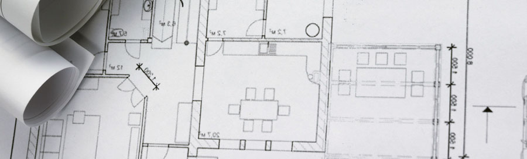

9 Drawings, graphs and designs
Drawings and designs are used when information needs to be presented in a visual format – eg an architect’s drawings; a graphic designer’s brochure design; a fashion designer’s sketches.
Graphs are used when presenting data in a visual and mathematical format – eg pie charts to show details of a company’s expenditure.